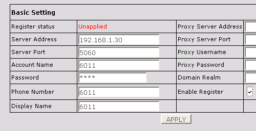

|
How to Configure IP Phones
2. Atcom AT-620R
- Connect the WAN port of the AT-620R to your network, it will boot and obtain an IP via DHCP.
- Press the Menu button. Enter 123 for the password, and press the OK soft button.
- Using the down direction button (just beneath the menu key) move to the Product Info menu. Then press the down button again and select Network Status. The IP of the phone will be displayed at the top of the screen, for example 192.168.1.160.
- On your PC open another browser window. Go to the phones IP, for example http://192.168.1.160
- Login to the phone using the username/password admin/admin.
- Go to the phone VOIP menu.
- Set Server Address to your Phone System IP Address.
- Set Account Name to the phone number (e.g. 6011).
- Also set Password to the phone number (e.g. 6011) and Phone Number and Display Name to the phone number (e.g. 6011).

- Check the Enable Register box.
- Then click on Apply.
- On your browser refresh this page to see if the phone is connected to your phone system.
|